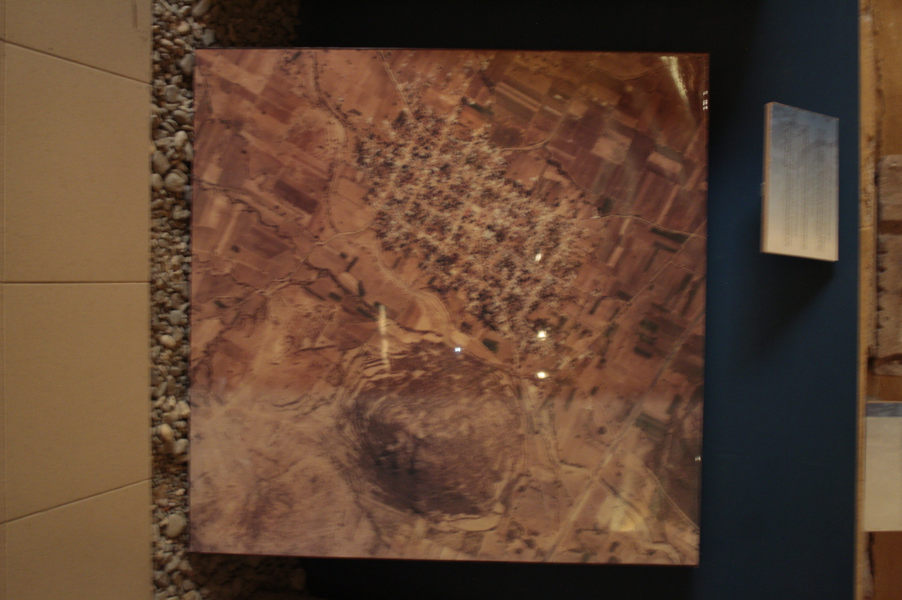

Bienvenidos al fascinante espacio temático que combina la rica historia de Mesoamérica con el final de la época colonial. Sumérgete en nuestro recorrido donde destacamos la impresionante reproducción gráfica del Lienzo de Macuilxochitl, realizado alrededor de 1580, como uno de los elementos principales de nuestra exhibición.